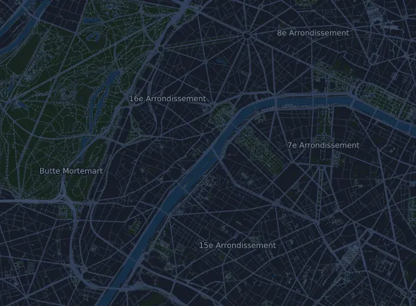

Harmonie Mutuelle 20 km de Paris
- Distance
- 20 km
- Elevation gain
- ↑ 223 m
- Highest point
- 70 m a.s.l.
- Surface
- Road
- Profile
- Gently rolling
- Aid stations
- 6
Elevation profile
Prepare with Mila
Mila is a running coach app. Add a race to your plan and the coach plans your weeks up to race day around your form, and gives you a finish-time forecast and a plan for pacing, drinks and fuel on the course.

The right run, on the right day.
The course

About the course
Harmonie Mutuelle 20 km de Paris is a road race in Paris, France, over 20 km. The course climbs 223 m and descends 218 m in total, 11 m per km, which makes it gently rolling. The highest point is 70 m above sea level and the lowest 27 m.
The biggest climb starts at km 0.4: 40 m of ascent over 1.3 km at 3.0 % on average, up to 70 m.
The organizer lists 6 aid stations, the first at km 3.5 and the last at km 18.0.
In the Mila app, the coach describes the course in detail in your language and plans your pacing and fueling for it.
Climbs
| Starts at | Length | Gain | Gradient | Top (m above sea level) |
|---|---|---|---|---|
| km 0.4 | 1.3 km | 40 m | 3.0 % | 70 |
Before the start
Aid stations
| At | What's there |
|---|---|
| km 3.5 | water |
| km 6.0 | water, food |
| km 9.5 | water, food |
| km 12.0 | water |
| km 15.0 | water, food |
| km 18.0 | water |
Source: harmonie-mutuelle.20kmparis.com, retrieved 15 October 2026
Pace table
Harmonie Mutuelle 20 km de Paris in 1:45:00 – pace per km and splits
5:14 per km · km 5: 26:12 · km 10: 52:24 · km 15: 1:18:36 · finish: 1:45:00
Harmonie Mutuelle 20 km de Paris in 2:00:00 – pace per km and splits
5:59 per km · km 5: 29:56 · km 10: 59:53 · km 15: 1:29:49 · finish: 2:00:00
Harmonie Mutuelle 20 km de Paris in 2:15:00 – pace per km and splits
6:44 per km · km 5: 33:41 · km 10: 1:07:22 · km 15: 1:41:03 · finish: 2:15:00
Harmonie Mutuelle 20 km de Paris in 2:45:00 – pace per km and splits
8:14 per km · km 5: 41:10 · km 10: 1:22:20 · km 15: 2:03:30 · finish: 2:45:00
The times assume an even pace the whole way. This is plain arithmetic, not a forecast: on climbs, in crowds and at aid stations the pace varies.
Frequently asked questions
When is Harmonie Mutuelle 20 km de Paris?
The date of the next edition is not set yet. The race was last held on 11 October 2026.
How long is Harmonie Mutuelle 20 km de Paris and how much climbing is there?
The race is 20 km with 223 m of climbing and 218 m of descent. The highest point is 70 m above sea level.
What is the course of Harmonie Mutuelle 20 km de Paris like?
The course is gently rolling, with 11 m of climbing per km on average. It has one climb of at least 25 m, at km 0.4: 40 m over 1.3 km. It runs from the start to a finish in another place. The surface is road.
Are there aid stations at Harmonie Mutuelle 20 km de Paris?
Yes. The organizer lists 6 aid stations: km 3.5 (water); km 6.0 (water, food); km 9.5 (water, food); km 12.0 (water); km 15.0 (water, food); km 18.0 (water).
How should I pace Harmonie Mutuelle 20 km de Paris?
Aim for an even effort rather than an even pace: let the pace drop on the climbs, win it back where it levels out, and hold back in the first kilometres. The biggest climbs start at km 0.4. In Mila you get a pace plan for this course, based on your own form.
More races like this
More races nearby
- 42km du Mont-Blanc (Marathon du Mont-Blanc)27 June 2027 · Chamonix-Mont-Blanc, France
- Corrida de Houilles – 10 km La Populaire27 December 2026 · Houilles, France
- Grand Trail du Saint Jacques - 100K 88 km19 June 2027 · Monistrol-d'Allier, France
- L'Ultra Marin – Le Grand Raid 175 km (Raid du Golfe du Morbihan)25 June 2027 · Vannes, France
- La Parisienne by nākd. – 7 km12 September 2027 · Paris, France
- Marathon de La Rochelle Serge Vigot – Marathon 42.2 km29 November 2026 · La Rochelle, France
Prepare with Mila
The right run, on the right day.
Details come from the course file and the organizer's information. Check the date, start times and rules with the organizer.
Mila is not affiliated with, sponsored by or endorsed by the organizer or the race's sponsors. Names and trademarks belong to their owners. Organizer or rights holder? Ask for a change or a removal